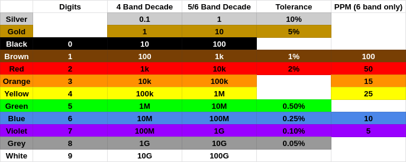

Ok, fine, they're correct, but they're needlessly confusing.
Here's a color code chart from DigiKey. To use it, take the first two (or three for five band resistors), make a 2 (or 3) digit number from them and multiply it by the next band. The tolerance is the band after that. Simple enough. Except that's not how people think about resistors.

When I want a 560k resistor I don't think of wanting 56 * 10k, I think of wanting 5.6 * 100k. I have to start with 56 and then figure out what to multiply it by to get 560k. Of course we can all do division but the point of a cheat sheet is to avoid doing math and get your answer faster. Ideally I should be able to figure out 5.6 is green-blue then look up that yellow gives me resistances in the 100k range for a four band resistor.
The standard decoding chart has one advantage however: it handles all resistors with one chart. 560k is green-blue-yellow for four band resistors but green-blue-black-orange for five or six band resistors. The extra digit means you need to multiply by one less decade. However I'd argue this only makes using the chart more error prone. It's one chart for two different processes: one where you're dividing by a 2 digit number and one where you're dividing by a three digit number. Just make two charts or two different multiplier columns.
Here's what a better chart might look like:
I've omitted graphics because I'm not good at making them. To use this chart create a number out of the first two or three bands in the form A.B or A.BC, then multiply by the decade listed for your number of bands. No mental math required.